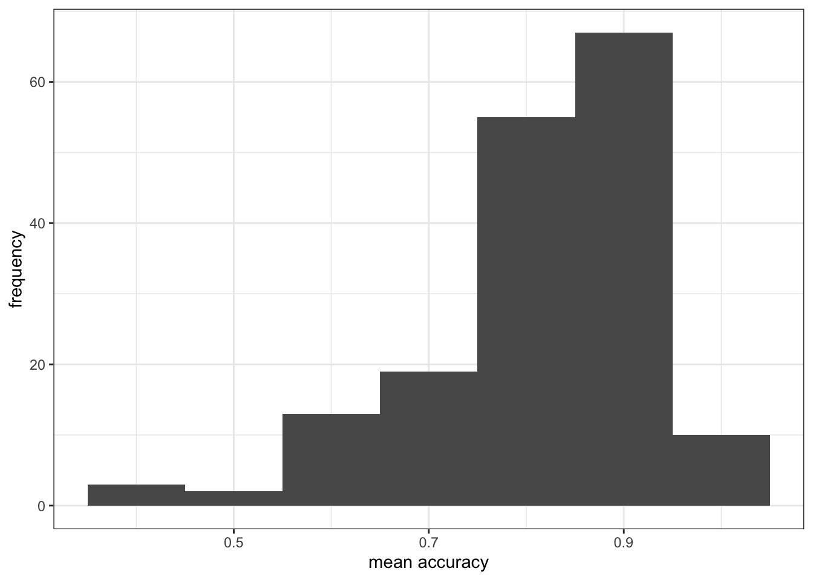

1 Hypotheses and associations
Warning
Under construction
1.1 Overview
Welcome to your overview of the materials and guidance you will work with in PSYC401 Week 16.
We will complete four classes in weeks 16-19. These classes are designed to help students to revise and put into practice some of the key ideas and skills you have been developing in the first year research methods modules PSYC121, PSYC123 and PSYC124.
We will do this in the context of a live research project with potential real world impacts: the Clearly understood project.
Our focus will be on what makes it easy or difficult for people to understand written health information. We encounter written health information all the time: in warnings signs, on medication labels, in clinics when we go to see the doctor, and online when we research things we are worried about. It is not always easy to understand this information. The problem is that it is unclear how health information should be communicated. As psychologists, we can help to improve health communication.
In these classes, we will complete a research project to answer the research questions:
- What person attributes predict success in understanding?
- Can people accurately evaluate whether they correctly understand written health information?
We will present our PSYC122 lessons in the context of this research project because we think that this context will help you to make sense of the data, and to see why we ask you to practice the skills we are teaching.
We will be revisiting some of the ideas and techniques you have seen introduced in previous classes. This is to give you the opportunity to revise and consolidate your learning. We will be extending your development with some new ideas, to strengthen your skills.
Ultimately, we aim to contribute new findings from the data we will collect together. These new findings will, we hope, help to make the provision of health advice a bit more useful in future.
1.2 Our learning goals
In Week 16, we will ask you to do two things.
First, we will ask you to do a pre-lab activity that involves completing a survey. Completing the survey will help you to make sense of the numbers you will be working with in the activities. Completing the pre-lab activity will help to teach you about the challenges of measurement, a key aspect of the scientific thinking skills we will help you grow:
- Scientific thinking: from concerns to questions to results and critical evaluation
Second, we wil ask you to do a set of practical tasks in the lab activity that are designed to consolidate your learning on data visualization. We will focus on the visualization of data distributions. We will be:
- Using histograms to examine the distributions of variables;
- And learning to edit the histograms so they are more effective.
1.3 Resources for you
You will see – below – links to the lectures, information about the data we will analyze, and an explanation of the activities.
All the links to the lectures, and everything you need for your practical work class can also be found in the Week 16 files folder on Moodle, here:
1.4 Lectures: video recordings
The lecture material for this week is presented in three parts. Click on a link and your browser should open a tab showing the Panopto video for the lecture part. (You will need to be on campus or logged in to the university VPN to get access to the videos.)
1.5 Readings
We do not provide further reading but you may find it helpful to take another look at the readings provided, previously, for your classes in weeks 11-13.
1.6 Pre-lab activity 1
In weeks 16-19, we will be working together on a research project to investigate how people vary in their response to health advice. Completing the project involves collecting responses from PSYC122 students. In our class activities, we can then analyze the data we collect.
To enter your responses, we invite you to complete a short survey. You can complete the survey here (just click on the web address to get started):
1.6.1 Survey information
The survey asks you to:
- complete some questions about who you are;
- and then answer some questions about what you know about some English words, about what you know about health matters, and about how you approach reading.
The survey then asks you to:
- read five short extracts from patient information leaflets about different kinds of health issue;
- respond to some multiple choice questions about each extract;
- and rate how well you think you understand the advice.
The survey should take about 20 minutes to complete. Some people will take less time, and some people might take a little more time.
Taking part in the survey is completely voluntary. You can stop at any time without completing the survey if you do not want to finish it. If you do not want to do the survey, you can do an alternative activity (see below).
All responses will be recorded completely anonymously.
1.7 Pre-lab activity 1 alternative
If you do not want to complete the survey, we invite you to read the pre-registered research plan for the PSYC122 health advice research project.
1.8 Pre-lab activity 2: Getting ready for the lab class
1.8.1 Get your files ready
Download the 122_week16_forStudents.zip files you need and upload them to your RStudio Server.
The folder includes data files:
study-one-general-participants.csvstudy-two-general-participants.csv
and code files:
2021-22-PSYC122-w16-activity.R2021-22-PSYC122-w16-how-to.R
You will use 2021-22-PSYC122-w16-how-to.R in the lab activity.
1.8.2 Review the how-to guide
We show you how to do everything you need to do in the lab activity (see the next section) in the how-to guide.
The guide comprises an .R file 2021-22-PSYC122-w16-how-to.R with code and advice, and a video showing you how the code works. The code in the .R file was written to work with the data file study-one-general-participants.csv.
In the video, I work my way through the R code, step-by-step, explaining what each line of code does. Watching the video takes about 20 minutes. It is completely optional but I have provided the video because students have told us they find it useful.
1.9 Lab activity
In the lab activity .R file 2021-22-PSYC122-w16-activity.R, you will work with data from a study about how people respond to guidance about a variety of health topics (general topics):
study-two-general-participants.csv
The data are similar in format to the response data we are collecting as part of the PSYC122 project.
The activity .R file and the data .csv file can be downloaded from:
Or you can download it from the module Moodle page for PSYC122:
1.9.1 What is in the activity .R file?
We will take things step-by-step. We will split .R scripts into parts, tasks and questions:
- different parts for different phases of the analysis workflow;
- different tasks for different steps in each phase;
- different questions to examine different ideas or coding steps.
1.9.2 Tasks
In the activity, we are going to work through the following tasks.
- Empty the R environment – using
rm(list=ls()) - Load relevant libraries – using
library() - Read in the data file – using
read_csv() - Inspect the data – using
head()andsummary() - Change the type classification of a variable in the data – using
as.factor() - Draw histograms to examine the distributions of variables – using
ggplot()andgeom_histogram() - Edit the appearance of one variable histogram plot step-by-step
The activity 2021-22-PSYC122-w16-activity.R file takes you through the tasks, one by one.
If you are unsure about what you need to do, check in the how-to guide: look at the advice in 2021-22-PSYC122-w16-how-to.R or watch the accompanying video.
You will see that you can match a task in the activity to the same task in the how-to. The how-to shows you what function you need and how you should write the function code. You will need to change the names of the dataset or the variables to complete the tasks in the activity.
This process of adapting demonstration code is a process critical to data literacy and to effective problem solving in working with data in psychological science.
1.9.3 What is in the data files
Each of the data files we will work with has a similar structure.
head(study.two.gen)# A tibble: 6 × 12
participant_ID mean.acc mean.self study AGE SHIPLEY HLVA FACTOR3 QRITOTAL
<fct> <dbl> <dbl> <fct> <dbl> <dbl> <dbl> <dbl> <dbl>
1 studytwo.1 0.411 6.07 studyt… 26 27 6 50 9
2 studytwo.10 0.607 8.5 studyt… 38 24 9 58 15
3 studytwo.100 0.875 8.93 studyt… 66 40 13 60 20
4 studytwo.101 0.964 8.5 studyt… 21 31 11 59 14
5 studytwo.102 0.714 7.07 studyt… 74 35 7 52 18
6 studytwo.103 0.768 5.07 studyt… 18 40 11 54 15
# ℹ 3 more variables: GENDER <fct>, EDUCATION <fct>, ETHNICITY <fct>You can see the columns:
participant_IDparticipant codemean.accaverage accuracy of response to questions testing understanding of health guidancemean.selfaverage self-rated accuracy of understanding of health guidancestudyvarianble coding for what study the data were collected inAGEage in yearsHLVAhealth literacy test scoreSHIPLEYvocabulary knowledge test scoreFACTOR3reading strategy survey scoreGENDERgender codeEDUCATIONeducation level codeETHNICITYethnicity (Office National Statistics categories) code
1.9.4 Answers
You can download the answers version of the activity .R file 2021-22-PSYC122-w16-activity-answers.R
The answers version will present my answers for questions, and some extra information where that is helpful.